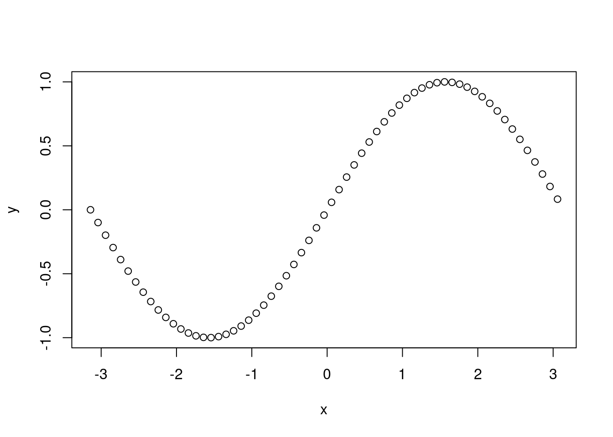
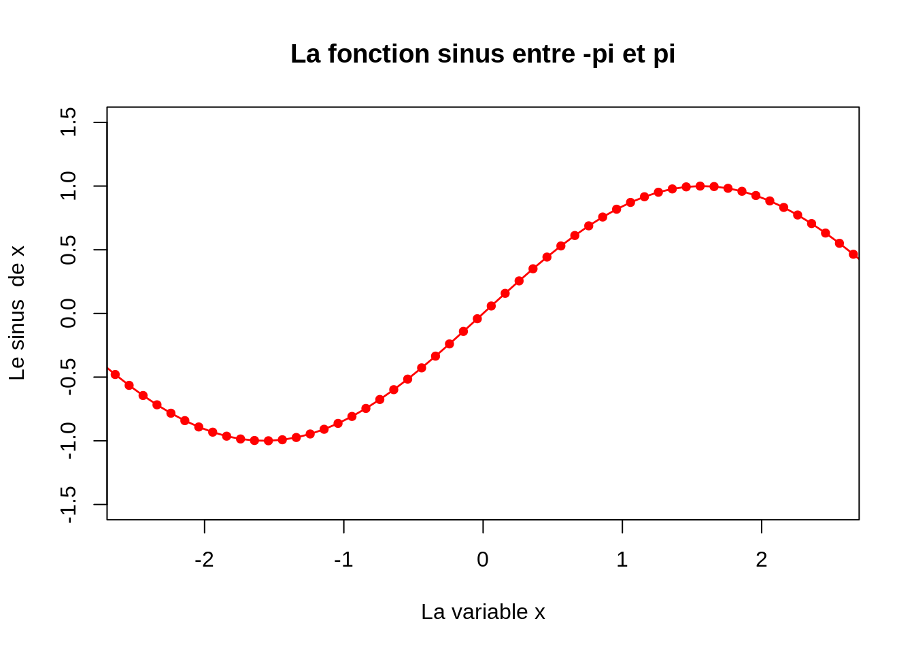
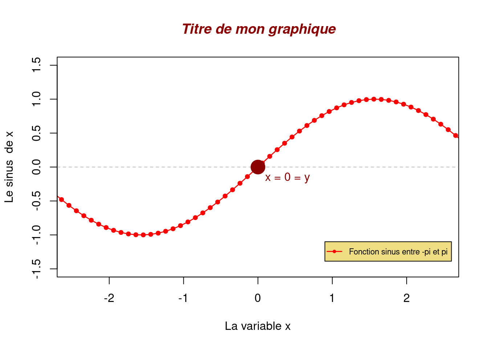

x <- seq(-pi, pi, 0.1)
y <- sin(x)
plot(x, y) 
Representations graphiques avec les fonctions primitives
Hugues pecout
26 janvier 2023
Le langage R met à disposition un ensemble de fonctions pour la représentation graphique via le package pré-installé graphics . Bien que l’on préférera des packages spécialisés et plus complets comme ggplot2 pour créer de jolis graphiques personnalisés, les fonctions R-base de représentation peuvent être très utiles en matière d’exploration de données.
Les fonctions graphiques peuvent être classées en trois catégories :
I. Les fonctions permettant de créer différents types de graphiques :
plot()barplot()stripchart()hist()boxplot()curve()II. les fonctions permettant d’ajouter de l’information à un graphique existant :
legend()title()density()points()lines()abline()text()III. Les fonctions utilisées pour fixer et contrôler des paramètres graphiques généraux :
par()layout()
La fonction primitive de représentation graphique la plus couramment utilisée est la fonction plot(). Il s’agit d’une fonction générique dont le comportement s’adapte automatiquement à la nature de ses arguments.
Deux syntaxes sont possibles pour utiliser cette fonction :
Dans l’expression y ~ x, y désigne la variable dépendante (à expliquer) et varX la variable indépendante (explicative).
La fonction plot() accepte une multitude d’arguments qui permettent de façonner les graphiques (voir le Help pour plus de détails).
plot(y ~ x,
type = "o", # type de tracé: points ("p"), lignes ("l"), les deux ("b" ou "o"), ...
col = "red", # couleur, tapez `colours()` pour la liste complète
pch = 20, # type de symboles, un chiffre entre 0 et 25, tapez `?points`
cex = 1.1, # taille des symboles
lty = 1, # type de lignes, un chiffre entre 1 et 6
lwd = 1.4, # taille de lignes
xlim = c(-2.5, 2.5), # limites de l'axe des x
ylim = c(-1.5, 1.5), # limites de l'axe des y)
xlab = "La variable x", # titre pour l'axe des x
ylab = "Le sinus de x", # titre pour l'axe des y
main = "La fonction sinus entre -pi et pi" # titre général pour le graphique
)
Une fois le graphique construit, plusieurs fonctions primitives vous permettre d’ajouter différents éléments. Exemple :
plot(y ~ x,
type = "o", # type de tracé: points ("p"), lignes ("l"), les deux ("b" ou "o"), ...
col = "red", # couleur, tapez `colours()` pour la liste complète
pch = 20, # type de symboles, un chiffre entre 0 et 25, tapez `?points`
cex = 1.1, # taille des symboles
lty = 1, # type de lignes, un chiffre entre 1 et 6
lwd = 1.4, # taille de lignes
xlim = c(-2.5, 2.5), # limites de l'axe des x
ylim = c(-1.5, 1.5), # limites de l'axe des y)
xlab = "La variable x", # titre pour l'axe des x
ylab = "Le sinus de x") # titre pour l'axe des y)
# Ajout d'une LEGENDE
legend(x = 0.9, # Emplacement de la légende (coin haut gauche)
y = -1.1, # Emplacement de la légende (coin haut gauche)
legend = "Fonction sinus entre -pi et pi",
bg = "lightgoldenrod",
col = "red",
pch = 20,
cex = 0.7, # Taille de lé lagende
lty = 1,
lwd = 1.4)
# Ajout d'une LIGNE (horizontale)
abline(h = 0, # Coupe l'axe des y à cette valeur
lty = 2, # Type de ligne
lwd = 0.5, # épaisseur
col = "grey50")
# Ajout d'un POINT
points(x = -0,
y = 0,
col = "red4",
pch = 20,# Type de symbol
cex = 4)
# Ajout de TEXTE
text("x = 0 = y", # Texte à afficher
x = 0.4, # Emplacement du texte (centre)
y = -0.16, # Emplacement du texte (centre)
col = "red4")
# Ajout d'un TITRE
title("Titre de mon graphique",
cex.main = 1.2,
font.main= 4,
col.main= "red4")
Deux fonctions (par() et layout()) permettent de gérer les paramètres graphiques (disposition figures, marges, axes, police…) :
Exemple d’utilisation de la fonction par() qui contient un grand nombre d’arguments possibles (cf. ?par) :
par(bg = "royalblue1", # Couleur de fond
col= "white", # couleur du graphique
mfrow = c(2,2), # Fenêtre découper en deux lignes / deux colonnes (4 graphiques)
mar = c(5,3,4,1)) # Gestion des marges pour chaque graphique (B,L,T,R)
plot(x = log(1:10), y = 10:1, main = "plot 1")
plot(x = exp(1:10), y = log(1:10), main = "plot 2")
plot(x = sin(1:10), y = 1:10, main = "plot 3")
plot(x = 1:10, y = exp(1:10), main = "plot 4")
layout() propose moins d’arguments mais permet un meilleur ajustement de la disposition des figures. Pour cela, il est nécessaire de construire une matrice pour indiquer la position et l’espace de chaque graphique ajouté. Exemple :
Avec la matrice ci-dessus, la fenêtre graphique sera paramétrée pour contenir trois graphiques. Le graphique 1 occupera toute la première ligne. le graphique deux occupera uniquement les deux dernières colonnes de la seconde ligne, et le troisième sera situé dans les deux premières colonnes de la dernière ligne. Exemple :
# gauche supérieur
stripchart(mpg$displ, xlab = "displ", pch = 16)
# droite supérieur
stripchart(mpg$displ, xlab = "displ", method = "stack", pch = 16)
# gauche inférieur
stripchart(mpg$displ, xlab = "displ", method = "jitter", pch = 16)
# droite inférieur
stripchart(mpg$displ, ylab = "displ", method = "jitter", vertical = TRUE, pch = "+")
plot(mpg$drv) #---> barplot()
barplot(mpg$drv)
# Pour la distribution
hist(mpg$displ)
hist(mpg$displ, freq = FALSE)
density(mpg$displ)curve()
curve(x^2, from = 0, to = 20, col = "red", lty = 1, ylab = "y")
curve(x^(2.5), from = 0, to = 20, col = "gray", lty = 2, add = TRUE)
curve(x^(3), from = 0, to = 20, col = "blue", lty = 3, add = TRUE)
legend("topright", title = "Function", legend = c("x^2", "x^2.5", "x^3"), col = c("red", "gray", "blue"), lty = 1:3, bty = "n", inset = c(0.2, 0))Un graphique crée dans RStudio est affiché par défaut dans l’onglet Plots. Vous pouvez utiliser cet onglet pour zoomer sur un graphique en cliquant sur le bouton Zoom. Vous pouvez aussi enregistrer le graphique en cliquant sur le bouton Export.
Pour sauvegarder un graphique R (tel que vous le visualisez sur votre écran) en format PDF, vous pouvez aussi exécuter le code suivant en remplaçant filename par le le nom que vous voulez. Le fichier ainsi créé sera enregistré dans votre répertoire de travail R.
1. Créez un projet Rstudio
File/New Project/New Directory…
---
title: "Graphique R-base"
subtitle: "Representations graphiques avec les fonctions primitives"
author: Hugues pecout
date: last-modified
ordre: 01
code-fold: true
code-tools: true
---
**Le langage R met à disposition un ensemble de fonctions pour la représentation graphique** via le package pré-installé `graphics` . Bien que l'on préférera des packages spécialisés et plus complets comme `ggplot2` pour créer de jolis graphiques personnalisés, les fonctions R-base de représentation **peuvent être très utiles en matière d'exploration de données**.
## Principales fonctions
### 3 types de fonction
Les fonctions graphiques peuvent être classées en trois catégories :
**I.** Les fonctions permettant de **créer différents types de graphiques** :
- `plot()`
- `barplot()`
- `stripchart()`
- `hist()`
- `boxplot()`
- `curve()`
- etc....
**II.** les fonctions permettant d'**ajouter de l'information à un graphique existant** :
- `legend()`
- `title()`
- `density()`
- `points()`
- `lines()`
- `abline()`
- `text()`
- etc...
**III.** Les fonctions utilisées pour **fixer et contrôler des paramètres graphiques généraux** :
- `par()`
- `layout()`
\
### La fonction plot()
La fonction primitive de représentation graphique la plus couramment utilisée est la fonction `plot()`. **Il s'agit d'une fonction générique dont le comportement s'adapte automatiquement à la nature de ses arguments**.
Deux syntaxes sont possibles pour utiliser cette fonction :
- Classique :
```{r eval = TRUE}
#| code-fold: FALSE
x <- seq(-pi, pi, 0.1)
y <- sin(x)
plot(x, y)
```
- syntaxe "formule" :
```{r eval = TRUE}
#| code-fold: FALSE
plot(y ~ x)
```
Dans l'expression `y ~ x`, `y` désigne la variable dépendante (à expliquer) et `varX` la variable indépendante (explicative).
La fonction `plot()` accepte une multitude d'arguments qui permettent de façonner les graphiques (voir le Help pour plus de détails).
```{r eval = TRUE}
#| code-fold: FALSE
plot(y ~ x,
type = "o", # type de tracé: points ("p"), lignes ("l"), les deux ("b" ou "o"), ...
col = "red", # couleur, tapez `colours()` pour la liste complète
pch = 20, # type de symboles, un chiffre entre 0 et 25, tapez `?points`
cex = 1.1, # taille des symboles
lty = 1, # type de lignes, un chiffre entre 1 et 6
lwd = 1.4, # taille de lignes
xlim = c(-2.5, 2.5), # limites de l'axe des x
ylim = c(-1.5, 1.5), # limites de l'axe des y)
xlab = "La variable x", # titre pour l'axe des x
ylab = "Le sinus de x", # titre pour l'axe des y
main = "La fonction sinus entre -pi et pi" # titre général pour le graphique
)
```
\
### Ajout d'éléménts
Une fois le graphique construit, plusieurs fonctions primitives vous permettre d'ajouter différents éléments. Exemple :
```{r eval = TRUE}
#| code-fold: FALSE
plot(y ~ x,
type = "o", # type de tracé: points ("p"), lignes ("l"), les deux ("b" ou "o"), ...
col = "red", # couleur, tapez `colours()` pour la liste complète
pch = 20, # type de symboles, un chiffre entre 0 et 25, tapez `?points`
cex = 1.1, # taille des symboles
lty = 1, # type de lignes, un chiffre entre 1 et 6
lwd = 1.4, # taille de lignes
xlim = c(-2.5, 2.5), # limites de l'axe des x
ylim = c(-1.5, 1.5), # limites de l'axe des y)
xlab = "La variable x", # titre pour l'axe des x
ylab = "Le sinus de x") # titre pour l'axe des y)
# Ajout d'une LEGENDE
legend(x = 0.9, # Emplacement de la légende (coin haut gauche)
y = -1.1, # Emplacement de la légende (coin haut gauche)
legend = "Fonction sinus entre -pi et pi",
bg = "lightgoldenrod",
col = "red",
pch = 20,
cex = 0.7, # Taille de lé lagende
lty = 1,
lwd = 1.4)
# Ajout d'une LIGNE (horizontale)
abline(h = 0, # Coupe l'axe des y à cette valeur
lty = 2, # Type de ligne
lwd = 0.5, # épaisseur
col = "grey50")
# Ajout d'un POINT
points(x = -0,
y = 0,
col = "red4",
pch = 20,# Type de symbol
cex = 4)
# Ajout de TEXTE
text("x = 0 = y", # Texte à afficher
x = 0.4, # Emplacement du texte (centre)
y = -0.16, # Emplacement du texte (centre)
col = "red4")
# Ajout d'un TITRE
title("Titre de mon graphique",
cex.main = 1.2,
font.main= 4,
col.main= "red4")
```
\
### Fenêtre graphique
Deux fonctions (`par()` et `layout()`) permettent de gérer les paramètres graphiques (disposition figures, marges, axes, police...) :
Exemple d'utilisation de la fonction `par()` qui contient un grand nombre d'arguments possibles (cf. `?par`) :
```{r eval = TRUE}
#| code-fold: FALSE
par(bg = "royalblue1", # Couleur de fond
col= "white", # couleur du graphique
mfrow = c(2,2), # Fenêtre découper en deux lignes / deux colonnes (4 graphiques)
mar = c(5,3,4,1)) # Gestion des marges pour chaque graphique (B,L,T,R)
plot(x = log(1:10), y = 10:1, main = "plot 1")
plot(x = exp(1:10), y = log(1:10), main = "plot 2")
plot(x = sin(1:10), y = 1:10, main = "plot 3")
plot(x = 1:10, y = exp(1:10), main = "plot 4")
```
`layout()` propose moins d'arguments mais permet un meilleur ajustement de la disposition des figures. Pour cela, il est nécessaire de construire une matrice pour indiquer la position et l'espace de chaque graphique ajouté. Exemple :
```{r eval = TRUE}
#| code-fold: FALSE
matrix(c(1,1,1,0,2,2,3,3,0), 3, 3, byrow = TRUE)
```
Avec la matrice ci-dessus, la fenêtre graphique sera paramétrée pour contenir trois graphiques. Le graphique 1 occupera toute la première ligne. le graphique deux occupera uniquement les deux dernières colonnes de la seconde ligne, et le troisième sera situé dans les deux premières colonnes de la dernière ligne. Exemple :
```{r eval = TRUE}
#| code-fold: FALSE
layout(mat = matrix(c(1,1,1,0,2,2,3,3,0), 3, 3, byrow = TRUE))
plot(x = log(1:10), y = 10:1, main = "plot 1")
plot(x = exp(1:10), y = log(1:10), main = "plot 2")
plot(x = sin(1:10), y = 1:10, main = "plot 3")
```
## Représentation uni et bivariée
### Var. quantitative
```{r eval = FALSE}
# gauche supérieur
stripchart(mpg$displ, xlab = "displ", pch = 16)
# droite supérieur
stripchart(mpg$displ, xlab = "displ", method = "stack", pch = 16)
# gauche inférieur
stripchart(mpg$displ, xlab = "displ", method = "jitter", pch = 16)
# droite inférieur
stripchart(mpg$displ, ylab = "displ", method = "jitter", vertical = TRUE, pch = "+")
plot(mpg$drv) #---> barplot()
barplot(mpg$drv)
# Pour la distribution
hist(mpg$displ)
hist(mpg$displ, freq = FALSE)
density(mpg$displ)
```
### 2 var. quantitatives
```{r eval = FALSE}
plot(hwy ~ displ, data = mpg, pch = 16)
```
### Var. qualitative
```{r eval = FALSE}
```
### 2 var. qualitatives
```{r eval = FALSE}
plot()
barplot()
```
### Quali. vs Quanti.
```{r eval = FALSE}
stripchart(hwy ~ trans, data = mpg, vertical = TRUE, pch = 16, metho = "jitter")
boxplot(hwy ~ trans, data = mpg)
plot()
boxplot(hwy ~ trans, data = mpg)
stripchart(hwy ~ trans, data = mpg, vertical = TRUE, pch = 16, metho = "jitter", add = TRUE)
boxplot(hwy ~ trans + drv, data = mpg)
```
## Tracer une fonction
```{r eval = FALSE}
curve()
curve(x^2, from = 0, to = 20, col = "red", lty = 1, ylab = "y")
curve(x^(2.5), from = 0, to = 20, col = "gray", lty = 2, add = TRUE)
curve(x^(3), from = 0, to = 20, col = "blue", lty = 3, add = TRUE)
legend("topright", title = "Function", legend = c("x^2", "x^2.5", "x^3"), col = c("red", "gray", "blue"), lty = 1:3, bty = "n", inset = c(0.2, 0))
```
## Exporter un graphique
Un graphique crée dans RStudio est affiché par défaut dans l'onglet **Plots**. Vous pouvez utiliser cet onglet pour zoomer sur un graphique en cliquant sur le bouton **Zoom**. Vous pouvez aussi enregistrer le graphique en cliquant sur le bouton **Export**.
Pour sauvegarder un graphique R (tel que vous le visualisez sur votre écran) en format PDF, vous pouvez aussi exécuter le code suivant en remplaçant filename par le le nom que vous voulez. Le fichier ainsi créé sera enregistré dans votre répertoire de travail R.
```{r eval = FALSE}
dev.print(pdf, "filename.pdf") # <-- remplacez 'filename' (gardez l'extension pdf)
```
## <i class="bi bi-person-workspace"></i> Exercice {.title .exo-title}
::: {#exo}
\
[1. Créez un projet Rstudio]{.question}
*File/New Project/New Directory...*
\
------------------------------------------------------------------------
```{r warning = FALSE, message = FALSE , eval = FALSE}
#| code-summary: "Un peu d'aide ?"
```
```{r warning = FALSE, message = FALSE , eval = FALSE}
#| code-summary: "Correction"
```
:::
\